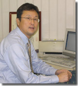

当事務所は開設以来40余年、多くの関与先の皆様に可愛がっていただき、今日に至ることが出来ました。
経済の多様化、国際化等に伴い、税務会計業界も電子申告をはじめとするＩＴ化への対応は欠かすことのできないものとなっています。又、企業にとっては厳しい経営環境の下資金繰りは重要な課題です。
当事務所は経営者の方々が安心して事業に取り組めるよう、税務・会計・経営等に関する信頼される相談者として、所長をはじめスタッフ全員が此れらの問題をサポートいたします。
どうぞ、お気軽にご連絡下さい。
税務・会計・経営のあらゆる場面で、経営者の皆様を総合的にサポートいたします。

昭和29年1月生（山羊座AB型）
〜「梶 税務経営ニュース」を、こちらでご覧いただけます。〜
梶 税務経営ニュース は 『Acrobat Reader』でご覧ください。下記より無償ダウンロードいただけます。